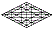

ocwhy Y'shua יהושע
Jesus, the Essene Teacher of Righteousness—that gentle servant with whom
the chosen are to share
y
eternal Life, this same Joshua is the man who exemplified
h
the epic sacrifice
w
of the Breath of Life
c
in a manner we could understand
o.
 He
received
y
his wings in an arid place
h
through unification
w
with the Spirit
c
of Prophecy
o.
In his ministry, he addressed
y
the sorrows
h
and burdens
w
that torment
c
compassionate
o
souls. He was spat upon and scourged
y.
His vision was despised
h.
He was mocked by evil men; and yet, at his death, he lifted our thoughts
to Heaven through his service to our Father, even with his final cry
w.
He
received
y
his wings in an arid place
h
through unification
w
with the Spirit
c
of Prophecy
o.
In his ministry, he addressed
y
the sorrows
h
and burdens
w
that torment
c
compassionate
o
souls. He was spat upon and scourged
y.
His vision was despised
h.
He was mocked by evil men; and yet, at his death, he lifted our thoughts
to Heaven through his service to our Father, even with his final cry
w.
His vulnerability
c
was overwhelming
o,
Gematria
391
axc:
but Wisdom raised him up in the glory
c
of transfiguration
x;
and he appeared before witnesses with eyes to see
a.
Numerology 58
jn
>
13
gy
>
4
d:
In his life on earth, he mastered the spiritual nuances
n
of Torah
j
that had initiated
y
the birthing process
g
within his heart
d.
Targum:
The servant
y
of Life
h,
he is stationed beside the throne of the third heaven
w,
where his fame and glory
c
are without end
o.
| Stepping Stones | Stepping Stones | |||
|
site |
Font | bookmenu | ||